This place is a message... and part of a system of messages... pay attention to it!
Sending this message was important to us. We considered ourselves to be a powerful culture.
This place is not a place of honor... no highly esteemed deed is commemorated here... nothing valued is here.
What is here was dangerous and repulsive to us. This message is a warning about danger.
The danger is in a particular location... it increases towards a center... the center of danger is here... of a particular size and shape, and below us.
The danger is still present, in your time, as it was in ours. The danger is to the body, and it can kill.
The form of the danger is an emanation of energy.
The danger is unleashed only if you substantially disturb this place physically.
This place is best shunned and left uninhabited.
Long-term warnings for nuclear waste try to keep people out of repositories in the far future, 10,000 years from now and more.
Nuclear semiotics designs those signs and messages. It began with the American Human Interference Task Force in 1981.
A 1993 Sandia National Laboratories report proposed sites that read at once as man-made and dangerous: spikes and hostile landscapes, pictographs of what the danger does, and written messages in layers, for those able to read them.
Spikes bursting through a grid: our drawing after one of the marker concepts in the Sandia report.
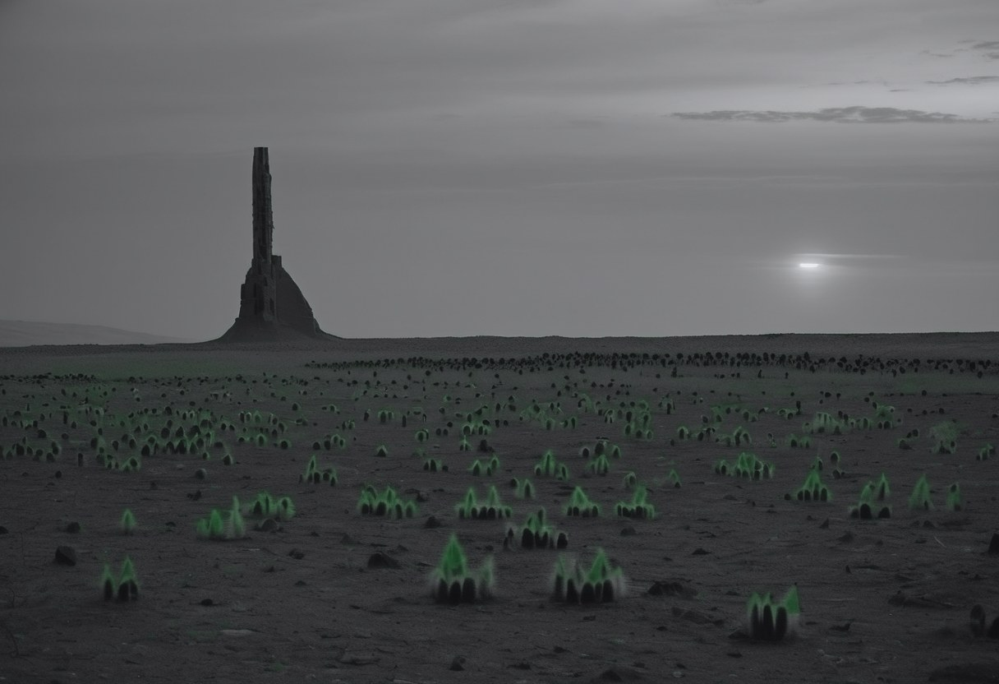
Failed first contact, inherited hazard
Present-day signals we built the world from, each placed on one of seven axes or under other. Sources on the references plate.
Proxima's light peaks in near-infrared, ours in visible light. The planet's builders saw there and marked danger there. We never saw their marks, so we dug.
A native fungus glows near danger, in light we can see: a living warning sign, after the ray cats (Fabbri & Bastide, 1984/2024).
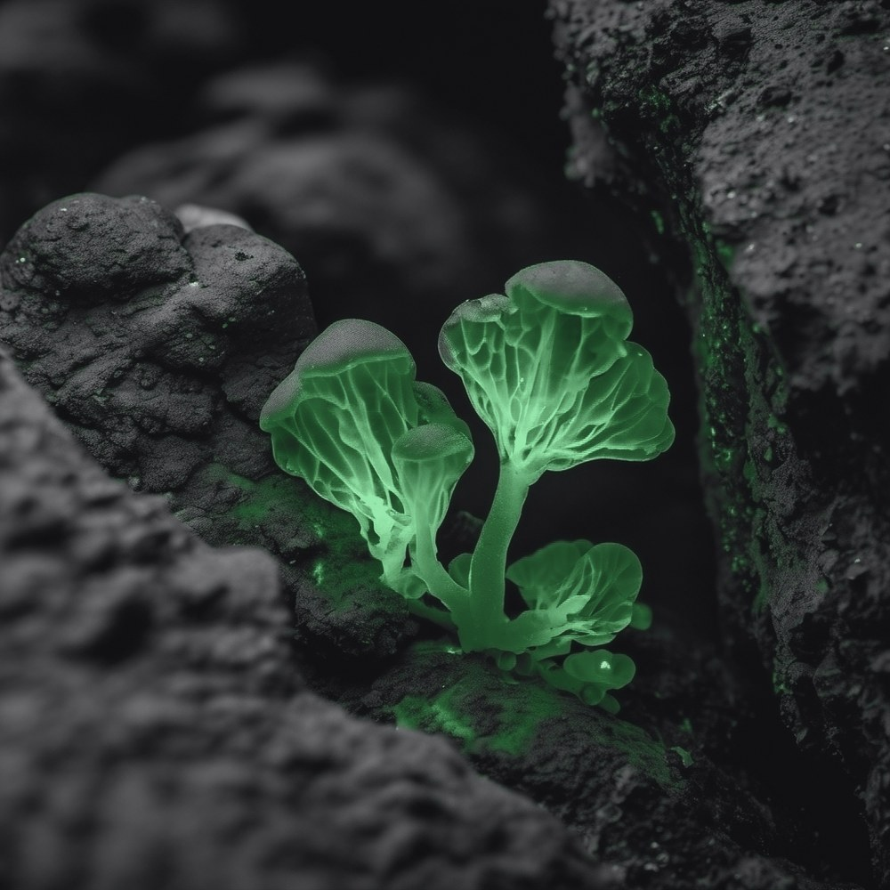
Redrawn after Meadows et al. (2018), Fig. 1; Proxima b after Anglada-Escudé et al. (2016). Seen from the planet, Proxima would look orange where our Sun looks white.
Flare: everything glows, then fades
A flare's UV makes fluorescent life glow (O'Malley-James & Kaltenegger, 2019).
Proxima's 2016 superflare, after Howard et al. (2018), Fig. 1.
Buried hazard: one patch keeps glowing
Melanized fungi grow faster under radiation (Dadachova et al., 2007).
Over 30 hours, after Dadachova et al. (2007), Fig. 6a.
The glow shows where. The suit says how bad, and how sure.
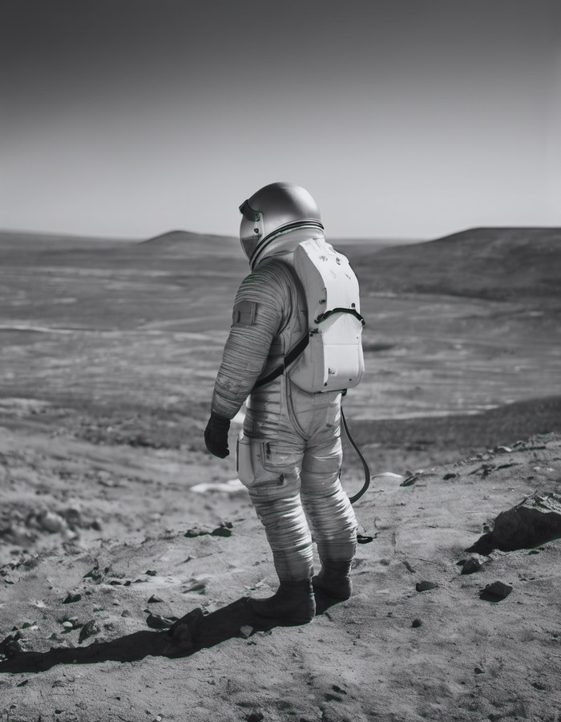
salvage worker
| Task | Channel | Why |
|---|---|---|
| Query | Gaze: look at a patch | Hands are busy |
| Answer | Visor: meaning + how sure | The suit can be wrong |
| Severity | Vibration rhythm | Orange light makes colour unreliable |
| Commands | Coarse glove gestures | Gloves cause "fat fingers" (Wobbrock et al., 2011) |
| Fatigue | Grip pressure (FSR) | Tired hands grip weaker |
| Team | Voice over radio | Share what the suit found |
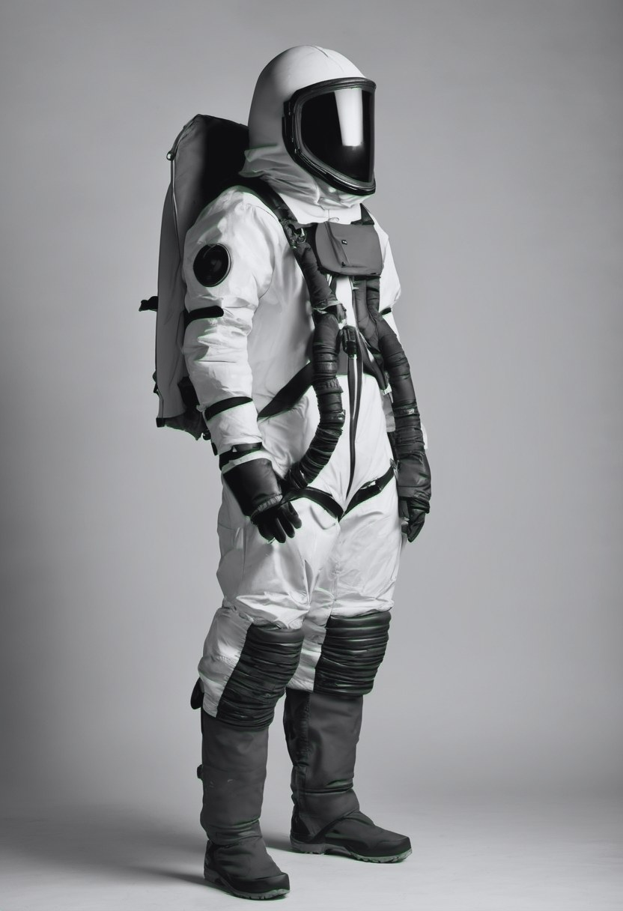
Atmospheric diving suits, firefighter gear, the NASA EMU suit, Level A hazmat suits, the Acronym 3A-5TS lookbook and Deconstructed collection, Rick Owens menswear for spring-summer 2027, and a fighter jet HUD for the visor.
From the midterm suit sheet: dark, worn neutrals and one acid accent.
Is "70% sure" ignored, or over‑trusted?
Flashback, week 1. Our force-sensitive resistor started hidden under foam (Ching & Fleck, 2026a, slide 48). Now it sits in the glove's palm.
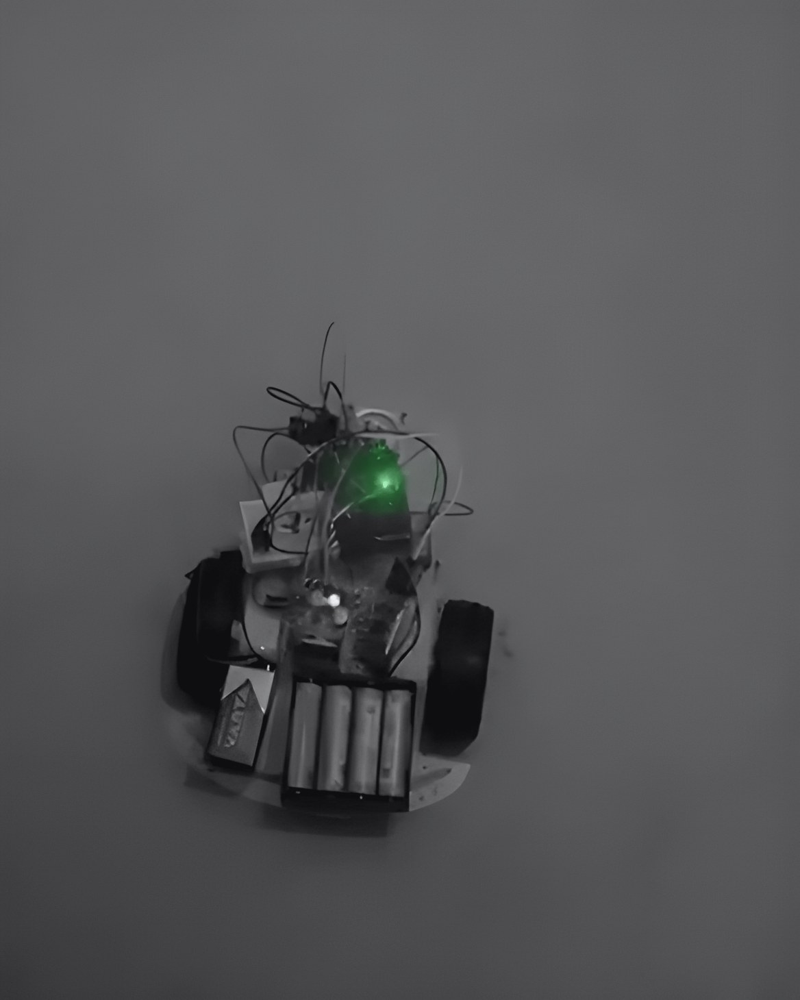
A probe rover that a gloved worker steers with a squeeze, a hand and his voice, so he never has to walk up to a hazard himself.
Left: the Arduino car on 8 October 2026, driving on spoken commands (a frame from the voice test video). Junior comes in two versions: this car responds to hand gestures and spoken commands; the 3D Junior runs the whole system.
On Proxima b a fungus glows over buried hazards. Junior goes and looks; Marvin stays back. His hands, eyes and voice are each busy part of the time: a situational impairment (Wobbrock et al., 2011).
A whole suit might be a lot.
TA feedback at the midterm
| Input from Marvin | Relation | What it does | Decided by |
|---|---|---|---|
| Glove squeeze | Gate | Switches which camera's gestures drive Junior; Junior stops on every switch | A fixed rule |
| Hand gestures | Assignment: direction | Open hand drives, tilt steers, fist stops | Hand tracking, then fixed rules; no model call |
| Voice | Assignment: action | "Stop", "come back", "check that one" | Fixed rules for "stop" and "come back", no model call |
| Voice + pointing | Mutual disambiguation | Speech says what, pointing says where | Gemma 3 4B gets words + point + glow and proposes a target in 2 to 3 s; the rules pick the glow |
Redundancy: "stop" works by voice, fist and squeeze. Priority: a driving hand cancels the autopilot; fixed rules act before the local model, which only proposes a target.
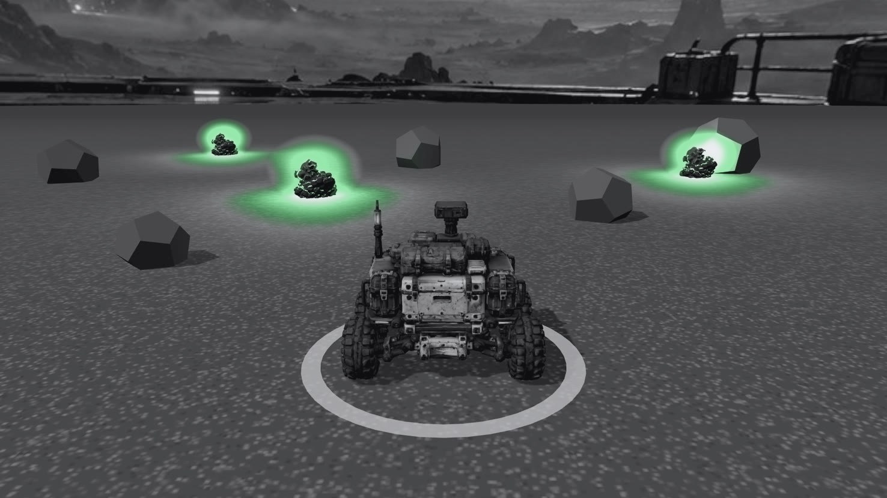
home ring glowing fungus: what glow.py looks for rocks: he stops 20 cm before oneOur code drives the 3D Junior: Junior's brain, the visor and glow.py, all on one laptop. He drives like the car and follows the same stop rules.
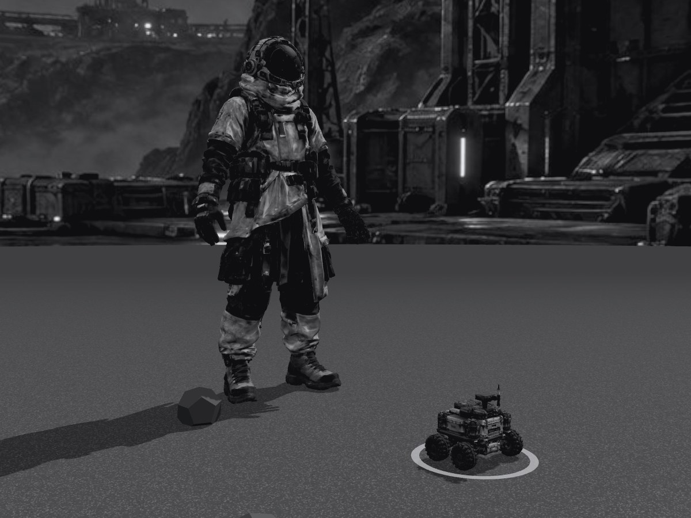
A squeeze: Junior stops, and his view takes over.
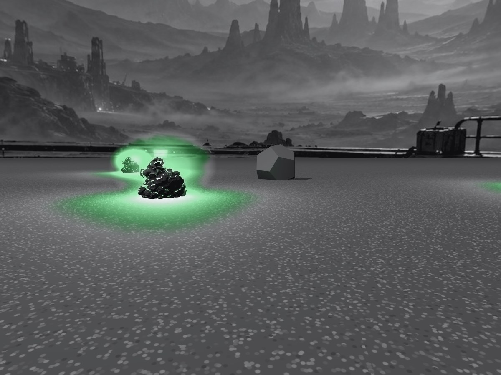
The visor shows where it glows.
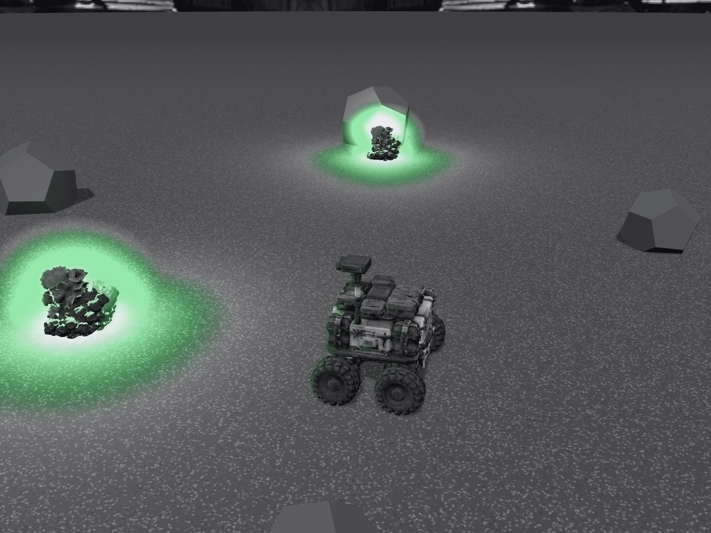
An open hand drives, a fist stops.
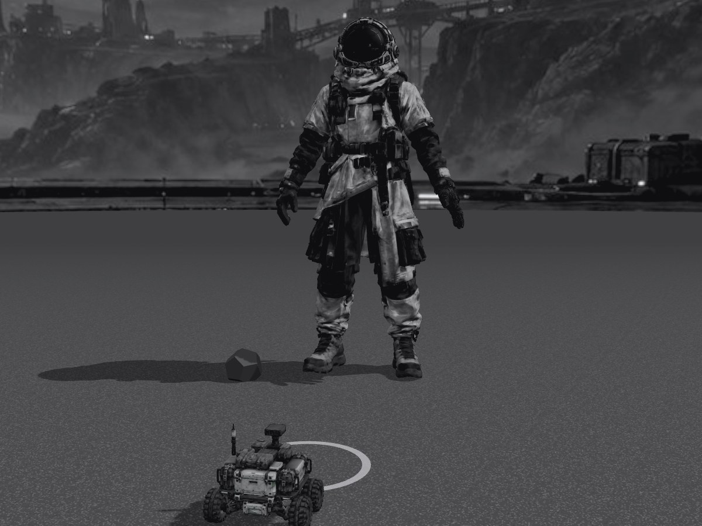
"Come back": straight home.
An illustrative trace. M,0,0 is the stop sent to the wheels: every switch stops Junior first. After a switch, only a fresh hand in the new view drives.
Hands on a tool, the radio busy with the team.
Why the palm. Used often, so it sits in the hand: no reaching for a button, less tiring. The squeeze is a gate: it carries no content, only "now" (Alavi, 2026c, pp. 43–44).
Every switch stops Junior first. A press counts at 800 and re-arms only below 200, so a brush does nothing and a held squeeze switches once.
Tracked by MediaPipe Hands (Zhang et al., 2020). The visor shows each command back as an icon: an echo (Alavi, 2026d, p. 21).
The radio is busy with the team, so Marvin steers Junior by hand.
Can the constant training of voice be an heirloom?
TA feedback, week 6
We dropped the radio filter: it made two of the voices sound alike. A voice tells who is speaking (Alavi, 2026b, p. 18).
"Junior, stop" is a fixed rule and adds no model call. For "Junior, check that one", Gemma 3 4B gets the words, the pointing and the glow, and the rules pick the glow: frame and strike (Alavi, 2026c, p. 28). Talking to Junior is push-to-talk (Alavi, 2026c, pp. 43–44).
Medians of 85 logged commands; 62 of them reached the model, 15 were fixed-rule commands.
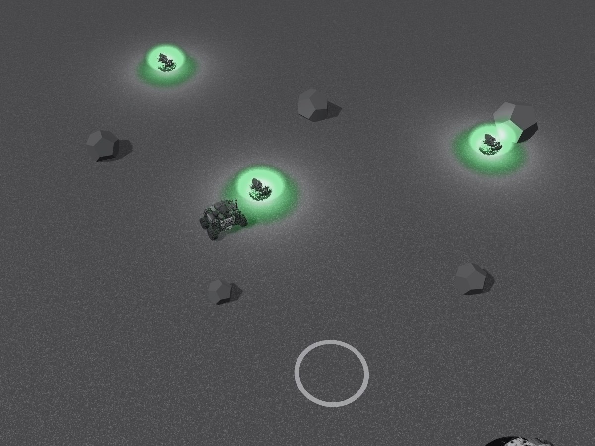
Repeats all steps in reverse to get back, not a direct route.
TA feedback, week 6
Before, Junior came back by repeating every step in reverse. Now autopilot.py adds up every wheel command, and on "come back" he turns towards the start and drives straight there.
An open hand held in view takes over from the way home: capture by design (Alavi, 2026d, p. 26; Parasuraman & Riley, 1997).
Seen from above in the 3D world, where the simulator supplies Junior's position. Without wheel encoders, the sum drifts over a whole site.
| Test, compared against | Result, one dot per trial |
|---|---|
Squeeze a hard press against a natural grip |
27 / 30 hard presses switched
1 / 40 natural grips switched by mistake |
Gestures a bare hand against a work glove (Dianat et al., 2012) |
64% bare hand, 48 / 75
63% work glove, 47 / 75 |
Latency speech recognition against the model call |
Glove, three testers: squeeze at 750 (now 800); 75 gestures per condition. Latency: medians of 85 logged commands (62 reached the model). Not tested yet: misheard commands per speaker (Koenecke et al., 2020). The testers are classmates, so this measures legibility, not Marvin's experience (Bennett & Rosner, 2019).
Which version runs what. The Arduino car responds to hand gestures and spoken commands. The 3D Junior runs the whole system: the squeeze, gestures, voice with pointing, glow detection, the local model and the way home.
Next. Wheel encoders, a wireless glove, and a test with people who work in gloves. Voiceprints and command recordings stay on the laptop; a real crew needs consent and a way to delete them.
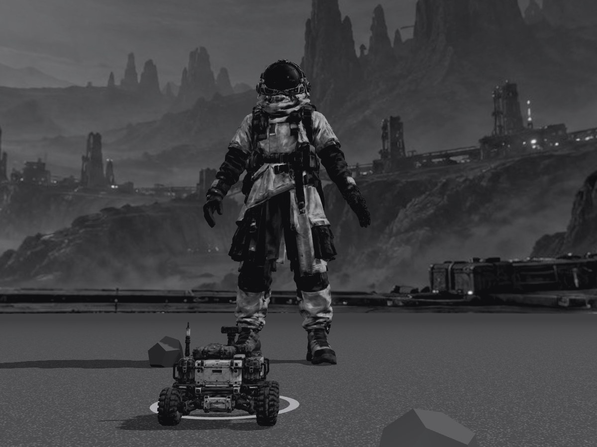
A missed squeeze or a misheard word, and Junior acts, sure of itself, in a voice Marvin trusts (Parasuraman & Riley, 1997).
At the midterm we asked whether "70% sure" would be ignored or over-trusted. The final ends on the same question.
Whose voice was it?
Alavi, H. (2026a). Multimodal interaction design (MMIxD), week 2: Vision [Lecture slides]. Canvas, University of Amsterdam. https://canvas.uva.nl/courses/59806
Alavi, H. (2026b). Multimodal interaction design (MMIxD), week 5: Voice [Lecture slides]. Canvas, University of Amsterdam.
Alavi, H. (2026c). Multimodal interaction design (MMIxD), week 6: Multimodality [Lecture slides]. Canvas, University of Amsterdam.
Alavi, H. (2026d). Multimodal interaction design (MMIxD), week 7: Design for human body, contextualizing MMIxD [Lecture slides]. Canvas, University of Amsterdam.
American Nuclear Society. (n.d.). The art of the 10,000-year warning. Nuclear Newswire. https://www.ans.org/news/article-416/the-art-of-the-10000year-warning/
American Nuclear Society. (2025). Deep geologic repository progress: 2025 update. Nuclear Newswire. https://www.ans.org/news/2025-07-25/article-7222/deep-geologic-repository-progress2025-update/
Anglada-Escudé, G., Amado, P. J., Barnes, J., Berdiñas, Z. M., Butler, R. P., Coleman, G. A. L., de la Cueva, I., Dreizler, S., Endl, M., Giesers, B., Jeffers, S. V., Jenkins, J. S., Jones, H. R. A., Kiraga, M., Kürster, M., López-González, M. J., Marvin, C. J., Morales, N., Morin, J., … Zechmeister, M. (2016). A terrestrial planet candidate in a temperate orbit around Proxima Centauri. Nature, 536(7617), 437–440. https://doi.org/10.1038/nature19106
Bennett, C. L., & Rosner, D. K. (2019). The promise of empathy: Design, disability, and knowing the "other". In Proceedings of the 2019 CHI Conference on Human Factors in Computing Systems (pp. 1–13). ACM. https://doi.org/10.1145/3290605.3300528
Ching, B., & Fleck, A. (2026a). Multimodal interaction design: Seminar week 1 [Seminar slides]. Canvas, University of Amsterdam. https://canvas.uva.nl/courses/59806
Ching, B., & Fleck, A. (2026b). Multimodal interaction design: Seminar week 2 [Seminar slides]. Canvas, University of Amsterdam. https://canvas.uva.nl/courses/59806
Dadachova, E., Bryan, R. A., Huang, X., Moadel, T., Schweitzer, A. D., Aisen, P., Nosanchuk, J. D., & Casadevall, A. (2007). Ionizing radiation changes the electronic properties of melanin and enhances the growth of melanized fungi. PLoS ONE, 2(5), Article e457. https://doi.org/10.1371/journal.pone.0000457
Dianat, I., Haslegrave, C. M., & Stedmon, A. W. (2012). Methodology for evaluating gloves in relation to the effects on hand performance capabilities: A literature review. Ergonomics, 55(11), 1429–1451. https://doi.org/10.1080/00140139.2012.708058
Fabbri, P., & Bastide, F. (2024). Living detectors and complementary signs: Cats, eyes, and sirens (S. Fell, Trans.). Linguistic Frontiers, 5(3), 10–13. https://doi.org/10.2478/lf-2022-0008 (Original work published 1984)
Harvard International Review. (n.d.). The Artemis Accords: International cooperation in the era of space exploration. https://hir.harvard.edu/the-artemis-accords/
Howard, W. S., Tilley, M. A., Corbett, H., Youngblood, A., Loyd, R. O. P., Ratzloff, J. K., Law, N. M., Fors, O., del Ser, D., Shkolnik, E. L., Ziegler, C., Goeke, E. E., Pietraallo, A. D., & Haislip, J. (2018). The first naked-eye superflare detected from Proxima Centauri. The Astrophysical Journal Letters, 860(2), Article L30. https://doi.org/10.3847/2041-8213/aacaf3
Human Interference Task Force. (1984). Reducing the likelihood of future human activities that could affect geologic high-level waste repositories (Technical Report ONWI-537). Office of Nuclear Waste Isolation, Battelle Memorial Institute.
Inside Climate News. (2026). Trying to get away from gas turbines, data centers place their hopes on small modular nuclear reactors. https://insideclimatenews.org/news/30082026/data-center-small-modular-nuclear-reactors/
International Bar Association. (2024). Disputes over space mining on the horizon? https://www.ibanet.org/disputes-over-space-mining-on-the-horizon
Koenecke, A., Nam, A., Lake, E., Nudell, J., Quartey, M., Mengesha, Z., Toups, C., Rickford, J. R., Jurafsky, D., & Goel, S. (2020). Racial disparities in automated speech recognition. Proceedings of the National Academy of Sciences, 117(14), 7684–7689. https://doi.org/10.1073/pnas.1915768117
Manual communication. (n.d.). In Wikipedia. Retrieved September 21, 2026, from https://en.wikipedia.org/wiki/Manual_communication
Meadows, V. S., Arney, G. N., Schwieterman, E. W., Lustig-Yaeger, J., Lincowski, A. P., Robinson, T., Domagal-Goldman, S. D., Deitrick, R., Barnes, R. K., Fleming, D. P., Luger, R., Driscoll, P. E., Quinn, T. R., & Crisp, D. (2018). The habitability of Proxima Centauri b: Environmental states and observational discriminants. Astrobiology, 18(2), 133–189. https://doi.org/10.1089/ast.2016.1589
NASA. (n.d.-a). Artemis Accords. https://www.nasa.gov/artemis-accords/
NASA. (n.d.-b). Space Suit RoboGlove (SSRG). NASA Technology Transfer Program. https://technology.nasa.gov/patent/MSC-TOPS-80
O'Malley-James, J. T., & Kaltenegger, L. (2019). Biofluorescent worlds, II: Biological fluorescence induced by stellar UV flares, a new temporal biosignature. Monthly Notices of the Royal Astronomical Society, 488(4), 4530–4545. https://doi.org/10.1093/mnras/stz1842
Oviatt, S. (1999). Ten myths of multimodal interaction. Communications of the ACM, 42(11), 74–81. https://doi.org/10.1145/319382.319398
Parasuraman, R., & Riley, V. (1997). Humans and automation: Use, misuse, disuse, abuse. Human Factors, 39(2), 230–253. https://doi.org/10.1518/001872097778543886
Progressive Geographies. (2025). Thomas Sebeok, Umberto Eco and the semiotics of nuclear waste. https://progressivegeographies.com/2025/02/02/thomas-sebeok-umberto-eco-and-the-semiotics-of-nuclear-waste/
Trauth, K. M., Hora, S. C., & Guzowski, R. V. (1993). Expert judgment on markers to deter inadvertent human intrusion into the Waste Isolation Pilot Plant (Report SAND92-1382). Sandia National Laboratories.
Wobbrock, J. O., Kane, S. K., Gajos, K. Z., Harada, S., & Froehlich, J. (2011). Ability-based design: Concept, principles and examples. ACM Transactions on Accessible Computing, 3(3), Article 9. https://doi.org/10.1145/1952383.1952384
World Nuclear News. (n.d.). How are geological repository projects progressing? https://www.world-nuclear-news.org/articles/how-are-geological-repository-projects-progressing
Zhang, F., Bazarevsky, V., Vakunov, A., Tkachenka, A., Sung, G., Chang, C.-L., & Grundmann, M. (2020). MediaPipe Hands: On-device real-time hand tracking (arXiv:2006.10214). arXiv. https://doi.org/10.48550/arXiv.2006.10214
Pictures and figures. Renders of the group's 3D Junior (sim.html; its rover and suit models were AI-generated for the project site) and a frame from the Arduino car's voice test video, both graded to grey. The postcard, Marvin, the suit and the fungus: generated with SDXL in ComfyUI for these plates. Charts redrawn after the sources named on them. Icons: Phosphor Icons (MIT). TA feedback: A. Fleck and B. Ching (personal communication, 26 September to 9 October 2026), not listed (APA 7).